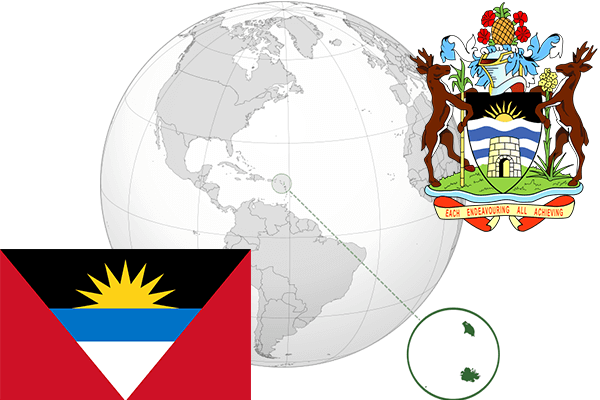

To`liq nomi: Antigua va Barbuda
Region: Markaziy Amerikaning sharqiy qismi
Qonunchilik shakli: Konstitutsion Monarxiya
Mustaqillik kuni: 1-noyabr 1981 Birlashgan Qirollikdan
Poytaxti: Sent-Jons
Maydoni: 440 km² (dunyoda 195 -o`rinda )
Aholisi: 93 581 (dunyoda 191 -o`rinda ) 2014 roʻyxat
Aholi zichligi: 186/km²
Aholining o`rtacha yoshi: 72,45 yil ( 74,9 ayollar, 70,0 erkaklar)
Rasmiy tili: Ingliz tili
Dini: Xristianlik
Pul birligi: East Caribbean Dollar (XCD)
Telefon prefiksi: +1
Internet domen: .ag
Xalqaro tashkilotlarga a`zoligi: BMT (1981-yildan)
Dengiz va okeanlarga chiqishi: Karib dengizi
YIM: Butun: $ 1.579 milliard, Jon boshiga: $ 18,026 (2012 - yil roʻyxati)
Yirik shaharlari: Sent-Jons